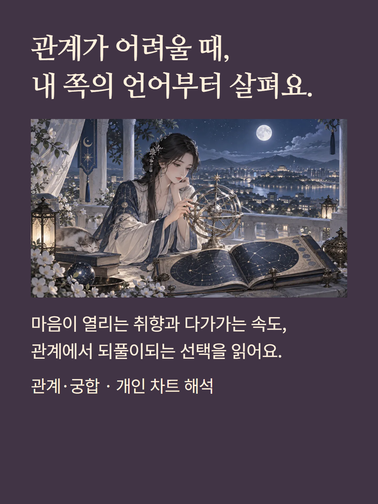
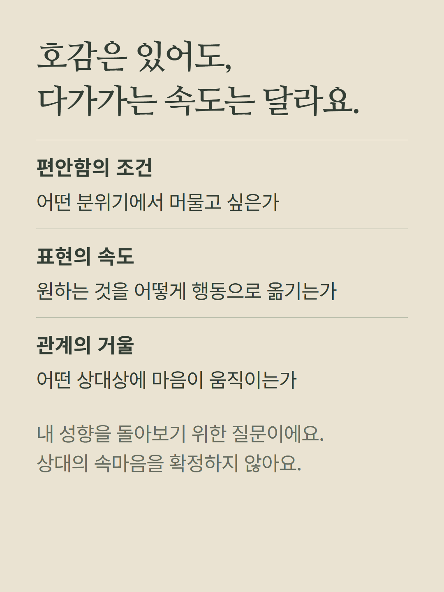
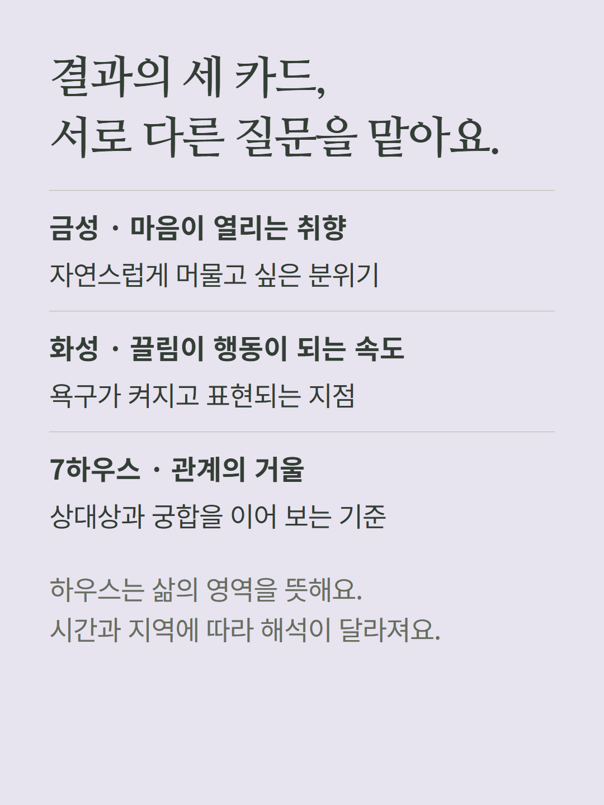
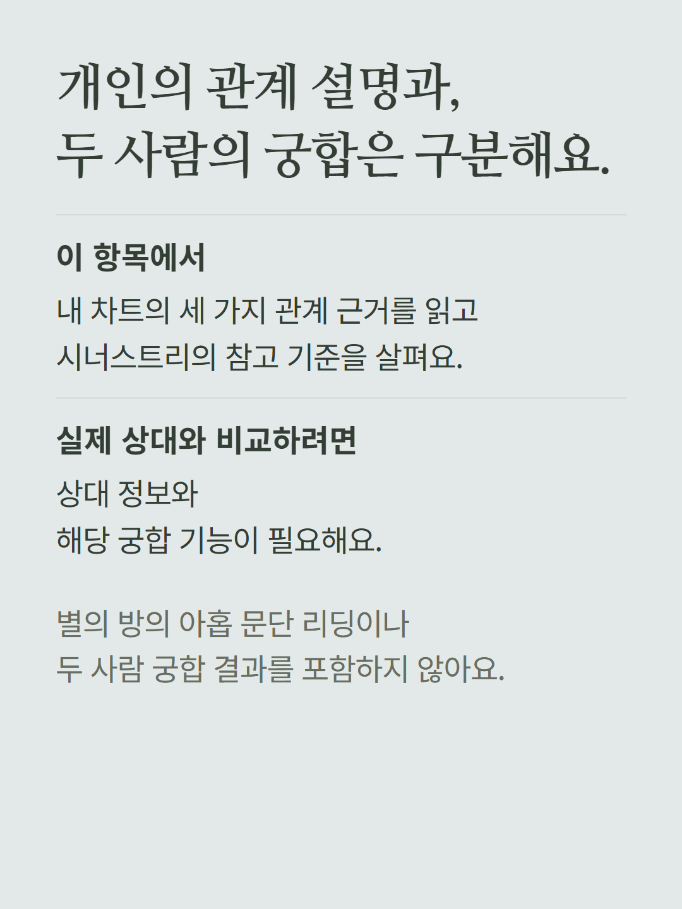
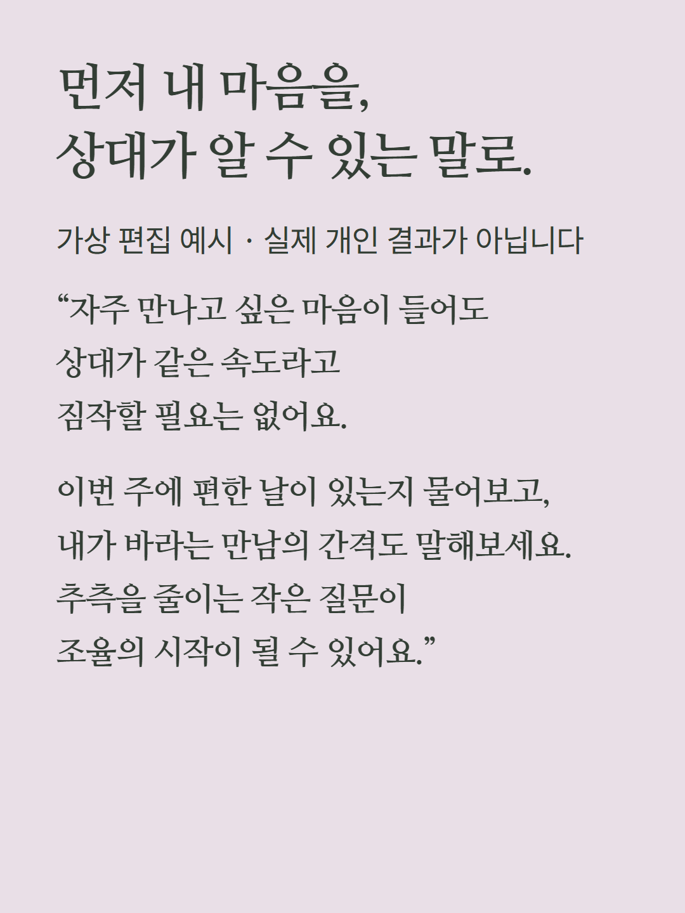
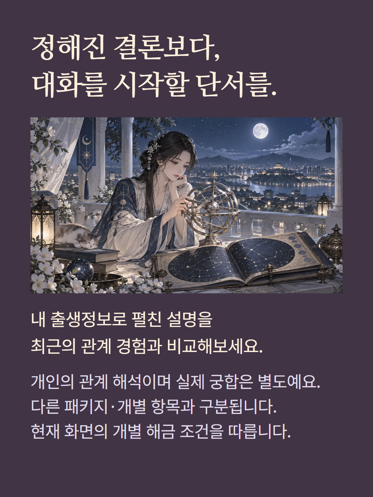

점성술 대체 결과 화면의 관계·궁합 개별 해금 항목입니다. 본인 출생차트의 금성·화성·7하우스를 세 설명 카드로 읽습니다. 시너스트리에서 상대 행성을 참고하는 방식도 설명하지만 상대 정보로 계산한 실제 두 사람 궁합 결과는 아닙니다. 정상 화면의 봉인된 별의 방 관계의 문과 별도 항목입니다. 출생시간·지역이 하우스 해석에 영향을 줍니다. 가상 편집 예시이며 기존 가격·해금 정책을 따릅니다.